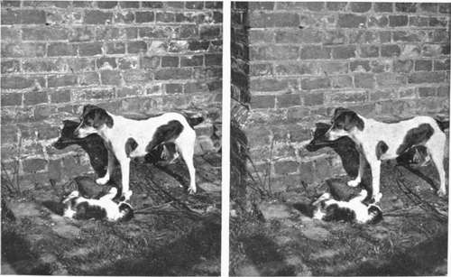

Birds And Their Nests And Eggs. Part 15
Description
This section is from the book "Nature Photography For Beginners", by E. J. Bedford. Also available from Amazon: Nature Photography for Beginners.
Birds And Their Nests And Eggs. Part 15
One advantage connected with these nests of the Warblers is that they are generally built low down in the bushes, and so make easy subjects to deal with on that account. I will go first, tapping with my stick, and you had better follow at a little distance with your camera and keep a sharp look-out for any bird which may escape my notice. Some have a habit of slipping off the nest just when one has passed, and if the ear is not sharp enough to detect the slight rustle of the wings, may escape notice altogether; so that it is advisable to search the herbage in addition to tapping it with the stick.
Here is a little clump of rank herbage just by the water's edge. I heard a Sedge Warbler a few moments ago, and this is a likely place for its nest. Yes, here it is; there are four eggs in it. The nest is somewhat similar to the Whitethroat's we have just left, but rather smaller, and is also fairly deep. You will have to tilt the camera a good deal, as you did with the Whitethroat's nest, in order to see the eggs. They are smaller in size than the Whitethroat's, and are usually of a uniform brown colour and sometimes have a few black dots or lines upon the surface. These, as you can see, are quite typical specimens. During the nesting season this bird may be heard uttering his little song at all hours of the day or night, and if disturbed in his haunts will usually commence to sing. He will often mimic the notes of other birds also. The wind is a little troublesome here, and you had better make two exposures on this nest, but wait patiently until you get a still interval, as the surroundings of the nest are moving a good deal at the present moment. While you are waiting, I will refer to another bird somewhat like the Sedge Warbler; I mean the Reed Warbler, which is more partial to large masses of reeds, where it usually builds its deep nest, attaching it to the stems of four reeds. The nest is so deep that even when the reeds carrying it are bent almost to the water level by the breeze the eggs are prevented from falling out. We are not at all likely to find the nest to-day. Here is another White-throat's nest with rather lighter coloured eggs than the last one we found, but we will not disturb it, as we have a good deal of ground to cover to-day.
Fig. 66. Playmates.
I had just stepped back to look at this patch of Field Daisies, and in doing so put a Meadow Pipit off her nest. Here it is right under the edge of the bank, and quite concealed by the overhanging long grass. She must have been sitting hard as we have been standing here for some time and have not disturbed her before. The nest reminds one of the White-throat's as far as materials go, but is much more substantially built. The eggs are similar to the Sedge Warbler's, but are larger. You will have to bend the overhanging grass back or you will not be able to see the eggs in the nest, but be careful to replace it after you have made the exposure.
We will cross over this little foot-bridge and return to the pond by the other side of the stream. We are nearly at the pond now, and in coming along I have found two more White-throats' nests and one Yellow Hammer's, all with eggs in, but as you already have photographs of similar nests I did not stop to show them to you. There is generally a Reed Bunting's nest near the pond, and last year I found it just about here. Yes, here is one in the very same bush quite close to the ground. Several of the nests we have seen to-day look perhaps very similar to you, but when they contain eggs it is quite easy to determine the species to which they belong.
These four eggs have the characteristic appearance of those belonging to the Bunting family, which enables any one to identify them at once. Although rather smaller than the eggs of the Yellow Bunting, they are richer and darker in colouring, the ground being much darker, and the large blobs of deep chocolate-brown look in places as if they had been painted on a damp surface and the colour had slightly spread.
Look at the young Ducks on the pond: there are three different families and no doubt some are from the nests we photographed. There are also some young Moorhens amongst one brood of Ducks. They were hatched, doubtless, from the nest we discovered on the other side of the pond. I can also identify our three members of the Swallow family skimming the surface of the water. There is the Sand Martin—the smaller bird with the brown back—the House Martin, and the Swallow. The latter you can tell at once by its forked tail and also by the reddish colour on the throat, which is not present in the other species.
There is a colony of Sand Martins close here in a sand-pit; we will go over to it now, as I heard a day or two ago the workmen were obliged to cut away a part where the birds were nesting, and I asked the owner of the pit to open out one or two of the channels leading to the nests if possible, and leave them with the nests and eggs for us to see. I have ascertained from the foreman that four nests have been left on the top of this piece of sand and they are covered over with a sack. Help me lift the sack up carefully and you will then be able to photograph them all together. One nest contains five eggs, one three, one is empty, and the fourth contains young birds which, however, are unfortunately dead. I have just measured the longest channel, and it is twenty-seven inches in length from the face of the pit to the nest. You must bear in mind it is hollowed out of the bank entirely by the aid of the bird's beak and claws. Notice, also, the channel is enlarged at the end where the nest is, this being little more than a few bits of straw lined with a few feathers of geese. One nest has two separate channels leading from it, and it is said the bird makes two so that if one becomes blocked up from any cause she can escape by the other. The nests of these birds are usually infested with fleas. After you have taken a view of all the nests, get another of one nest from a closer position, and then get down and obtain a view of the face of the bank showing the entrance holes of the nests uncovered, and also those below. It is not often one gets a chance of obtaining a view of the nests in situ, and I am sure you wish to thank the owner for his kindness in leaving them for us to see and photograph.
Continue to:
- prev: Chapter XI. How To Observe And Photograph Some Of Our Commoner Birds And Their Nests And Eggs. Part 14
- Table of Contents
- next: Birds And Their Nests And Eggs. Part 16
Tags
nature, photography, art, birds, camera